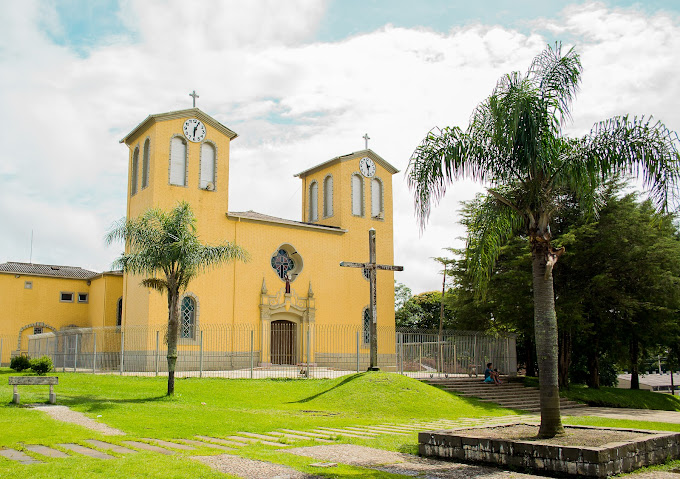
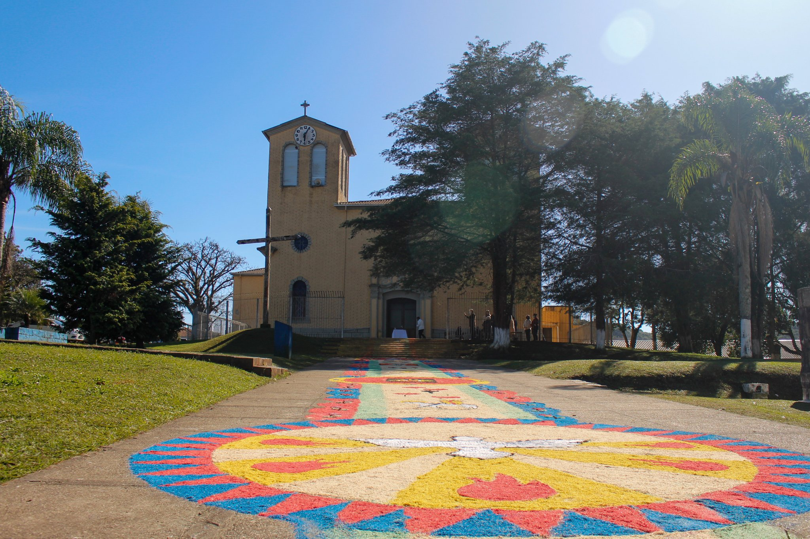
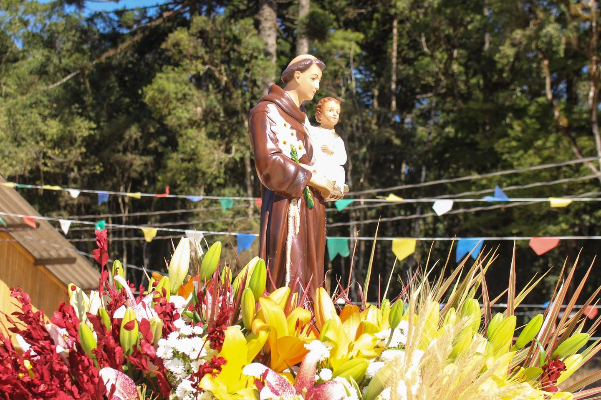
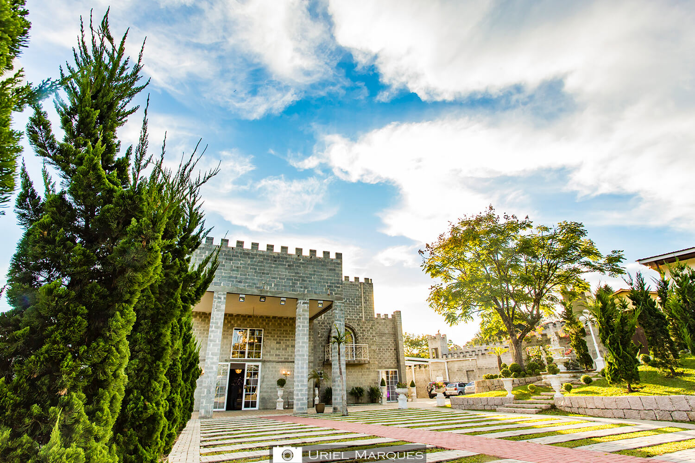
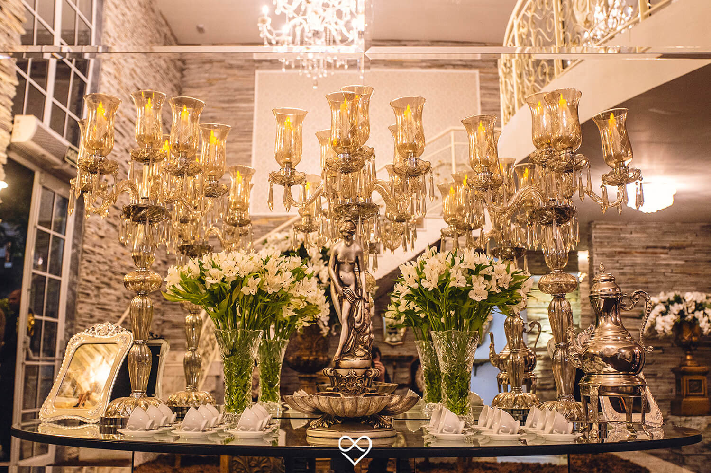
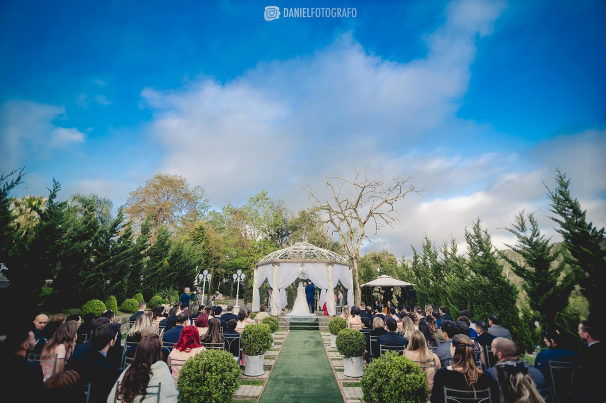
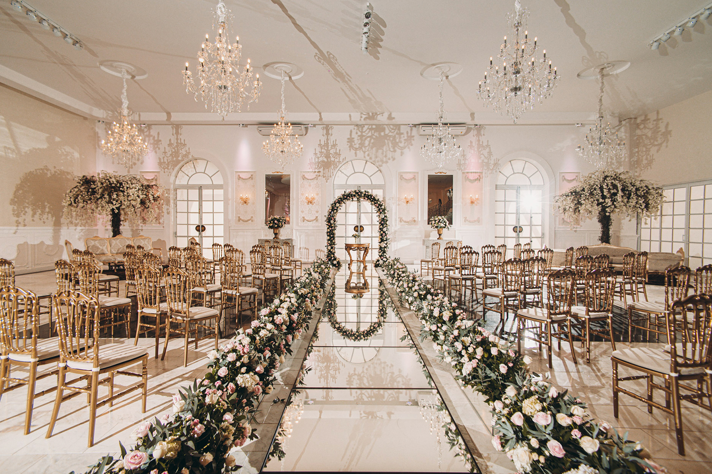

Roteiro da Cidade
Em Bocaiúva do Sul, você encontrará diversas atrações que vale a pena visitar. Comece sua jornada explorando a deslumbrante Paróquia Santo Antônio, uma igreja católica que impressiona com sua arquitetura e proporciona uma atmosfera serena e tranquila para momentos de contemplação. Suba até o Morro da Cruz para desfrutar de uma vista panorâmica incrível da região. Esse local oferece uma visão deslumbrante das montanhas e do vale ao redor, proporcionando uma experiência visual inesquecível. Não deixe de visitar os mirantes espalhados pela cidade. Esses pontos oferecem vistas pitorescas e panorâmicas, permitindo que você aprecie a beleza natural de Bocaiúva do Sul. Para os amantes dos animais, a Vila dos Animais é uma parada obrigatória. Nesse local, você encontrará uma variedade de espécies e poderá interagir com os animais de forma segura e educativa. Se você estiver em busca de diversão, confira os parques de diversões e temáticos da região. Eles oferecem atrações emocionantes para todas as idades, garantindo momentos de entretenimento e lazer. Uma visita às fazendas locais também é recomendada. Além de aprender sobre a tradição agrícola da região, você terá a oportunidade de interagir com os animais, desfrutar de produtos frescos e mergulhar na autenticidade da vida rural. O Castello Reale é uma atração imperdível em Bocaiúva do Sul. Esse castelo encantador leva você de volta no tempo, oferecendo uma experiência única e fascinante. Explore os seus jardins, admire a arquitetura imponente e mergulhe na história do local. Outra parada interessante é a Casa do Colono Italiano Eugênio. Nesse local, você poderá conhecer a cultura e as tradições dos colonos italianos que influenciaram a região. Descubra mais sobre sua história, admire objetos históricos e desfrute da hospitalidade italiana. Esses pontos turísticos são apenas algumas das maravilhas que Bocaiúva do Sul tem a oferecer. Desfrute de uma jornada repleta de beleza, cultura, diversão e história nesta encantadora cidade do Paraná.
Paróquia Santo Antônio
  A Paróquia Santo Antônio de Bocaiúva do Sul, no Paraná, é uma bela igreja católica dedicada a Santo Antônio. Sua arquitetura impressionante e atmosfera serena atraem visitantes em busca de paz e espiritualidade. Além das celebrações religiosas, a paróquia desempenha um papel importante na comunidade local. Localizada em uma cidade cercada por paisagens naturais deslumbrantes, os visitantes também podem desfrutar de atividades ao ar livre e explorar a cultura local. É um destino imperdível para quem busca uma experiência espiritual e cultural enriquecedora.
Castello Reale
   Situado em um cenário deslumbrante, o Castello Reale, projetado pela renomada empresa Sandra Mara Eventos, é um encantador centro de eventos que atrai turistas em busca de experiências memoráveis. Com sua arquitetura imponente e atmosfera mágica, o Castello Reale é o local ideal para celebrar casamentos, aniversários, bailes de formatura e eventos corporativos de uma maneira verdadeiramente única. Localizado em uma região de tirar o fôlego, o Castello Reale oferece aos visitantes a oportunidade de imortalizar os momentos mais especiais de suas vidas em um ambiente encantador e pitoresco. Se você está em busca de um destino turístico extraordinário, não deixe de conhecer o Castello Reale e vivenciar toda a sua magia e beleza.